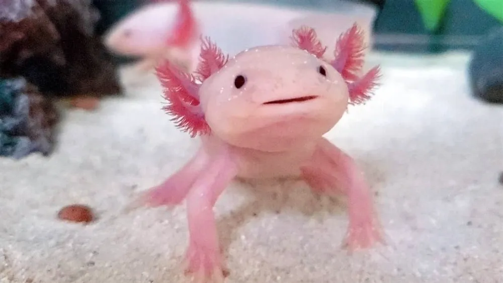

AJOLOTE

El axolote mexicano o ajolote, Ambystoma mexicanum, es una salamandra con la característica poco habitual de conservar sus rasgos larvales en su vida adulta. Esta condición, que se conoce como neotenia, significa que conserva su aleta dorsal de renacuajo -que recorre casi la totalidad de su cuerpo- y sus branquias externas, que sobresalen de la parte trasera de su ancha cabeza en forma de plumas.
Este singular anfibio se encuentra en peligro crítico de extinción según la lista roja de la Unión Internacional por la Conservación de la Naturaleza, debido a la pérdida de hábitat, la introducción de especies invasoras en su hábitat, la sobreexplotación, la contaminación y su consumo como alimento. El axolote se encuentra únicamente en el complejo lacustre de Xochimilco (pronunciado Sochimilco), cercano a la ciudad de México, y difiere de la mayoría de las salamandras en que vive permanentemente en el agua. En casos extremadamente raros, el axolote madura y sale del agua, pero en la mayoría de los casos prefieren permanecer en el fondo de los lagos y canales de Xochimilco.
- Alcanza longitudes de hasta 30 centímetros, aunque su tamaño medio es de 15 cm.
- El axolote suele ser negro o marrón moteado, aunque también son relativamente comunes las variedades albinas y blancas, especialmente entre especímenes criados en cautividad.
- El axolote es longevo, alcanza hasta 15 años de edad.
- Se alimenta de moluscos, gusanos, larvas de insectos, crustáceos y algún pez.
- Entre las amenazas naturales se cuentan las aves de presa como las garzas.
MENU